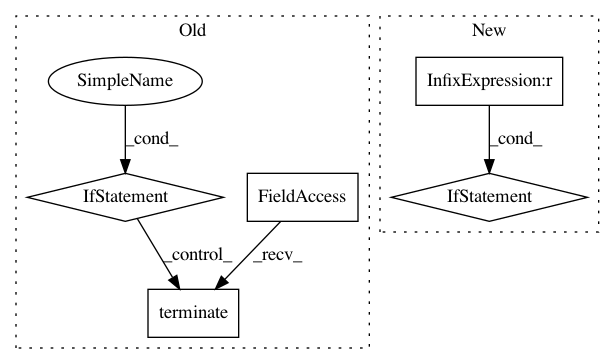

83afd0a83b743f962a6d3f7f46cf63816f4faff6,src/sos/workflow_executor.py,ExecutionManager,terminate,#ExecutionManager#Any#,164
Before Change
close_socket(proc.socket)
time.sleep(0.1)
for proc in self.procs + self.pool:
if proc.worker and proc.worker.is_alive():
proc.worker.terminate()
proc.worker.join()
else:
for proc in self.procs + self.pool:
// proc can be fake if from a nested workflow
if proc.worker:
After Change
def terminate(self, brutal: bool = False) -> None:
self.cleanup()
if self.executor_ping_socket is not None:
close_socket(self.executor_ping_socket, "ping socket", now=True)
if not brutal:
for proc in self.procs + self.pool:
proc.socket.send_pyobj(None)
close_socket(proc.socket, now=True)
In pattern: SUPERPATTERN
Frequency: 3
Non-data size: 5
Instances
Project Name: vatlab/SoS
Commit Name: 83afd0a83b743f962a6d3f7f46cf63816f4faff6
Time: 2019-02-15
Author: ben.bog@gmail.com
File Name: src/sos/workflow_executor.py
Class Name: ExecutionManager
Method Name: terminate
Project Name: deepdrive/deepdrive
Commit Name: e3464f7cfc09a5d909776386481a17f345bf9111
Time: 2018-11-20
Author: cquiter@gmail.com
File Name: sim/gym_env.py
Class Name: DeepDriveEnv
Method Name: close_sim
Project Name: vatlab/SoS
Commit Name: b6d57e6705748b6589e0d0a38cfe190d131571bc
Time: 2019-02-24
Author: ben.bog@gmail.com
File Name: src/sos/workflow_executor.py
Class Name: ExecutionManager
Method Name: terminate